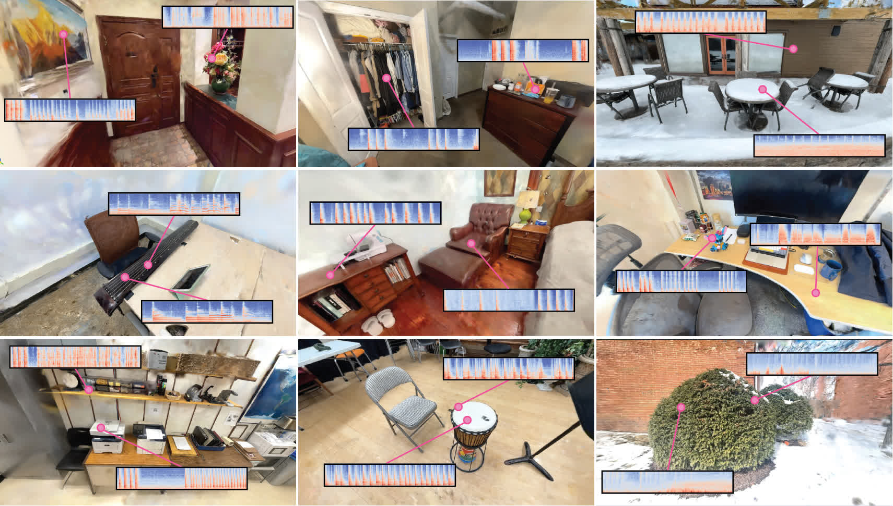

Click on the video to unmute or mute! (Audio begins around 0:15)
We study the problem of making 3D scene reconstructions interactive by asking the following question: can we predict the sounds of human hands physically interacting with a scene?
First, we record a video of a human manipulating objects within a 3D scene using their hands. We then use these action-sound pairs to train a rectified flow model to map 3D hand trajectories to their corresponding audio. At test time, a user can query the model for other actions, parameterized as sequences of hand poses, to estimate their corresponding sounds. In our experiments, we find that our generated sounds accurately convey material properties and actions, and that they are often indistinguishable to human observers from real sounds.
Select the action using the buttons on the right of the video to hear the corresponding generated audio for that action. (Click the button to play the video, and click it again to pause.)
The human collector interacts with the scene by performing various actions with their hands. We lift the annotator's hands to the same 3D space of the scene reconstruction, and render a video of the interaction by projecting 3D hands on multiple viewpoints of the scene.
Our dataset is collected in 24 scenes, including offices, outdoor trees, bedrooms, etc., and covers a wide range of actions (hitting, scratching, patting, etc.) and interacted materials (wood, metal, plastic, etc.).
We train a rectified flow model to generate a sound spectrogram from a sequence of 3D hand positions and video frames generated from a 3D reconstruction of a scene. The sound can subsequently be converted into a waveform using a vocoder.
@inproceedings{dou2025hearing,
title={Hearing Hands: Generating Sounds from Physical Interactions in 3D Scenes},
author={Dou, Yiming and Oh, Wonseok and Luo, Yuqing and Loquercio, Antonio and Owens, Andrew},
booktitle={Proceedings of the Computer Vision and Pattern Recognition Conference},
pages={1795--1804},
year={2025}
}